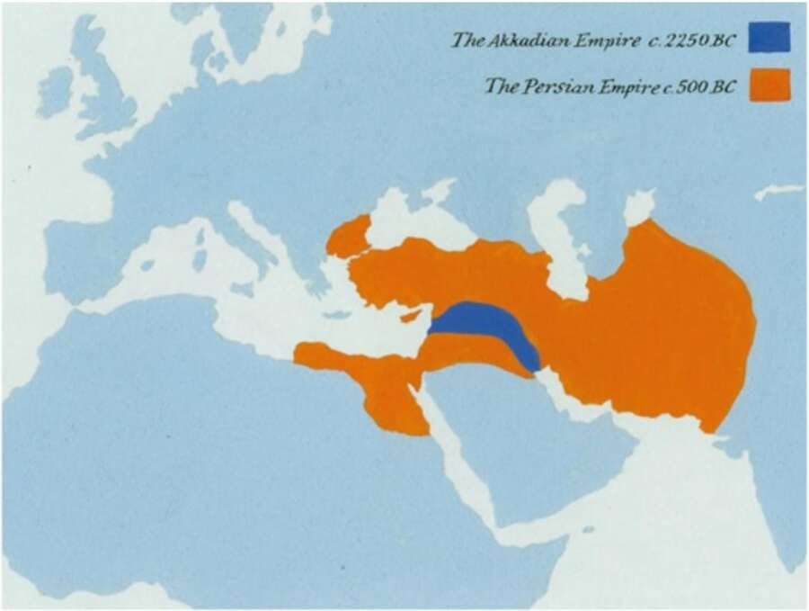

Map 4. The Akkadian Empire and the Persian Empire. The kings of Assyria always remained the kings of Assyria. Even when they claimed to rule the entire world, it was obvious that they were doing it for the greater glory of Assyria, and they were not apologetic about it. Cyrus, on the other hand, claimed not merely to rule the whole world, but to do so for the sake of all people. ‘We are conquering you for your own benefit,’ said the Persians. Cyrus wanted the peoples he subjected to love him and to count themselves lucky to be Persian vassals. The most famous example of Cyrus’ innovative efforts to gain the approbation of a nation living under the thumb of his empire was his command that the Jewish exiles in Babylonia be allowed to return to their Judaean homeland and rebuild their temple. He even offered them financial assistance. Cyrus did not see himself as a Persian king ruling over Jews — he was also the king of the Jews, and thus responsible for their welfare. The presumption to rule the entire world for the benefit of all its inhabitants was startling. Evolution has made Homo sapiens, like other social mammals, a xenophobic creature. Sapiens instinctively divide humanity into two parts, ‘we’ and ‘they’. We are people like you and me,
